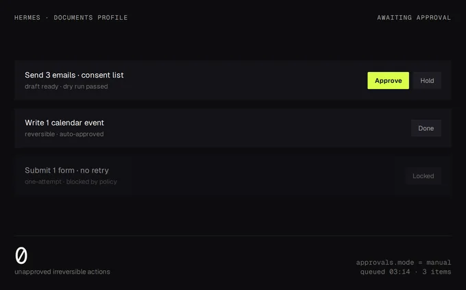
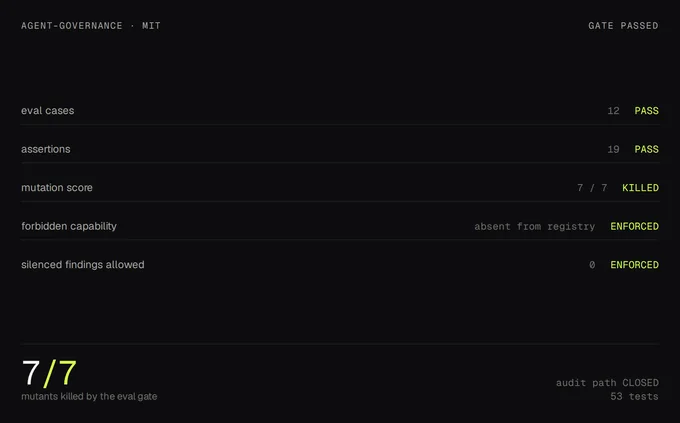
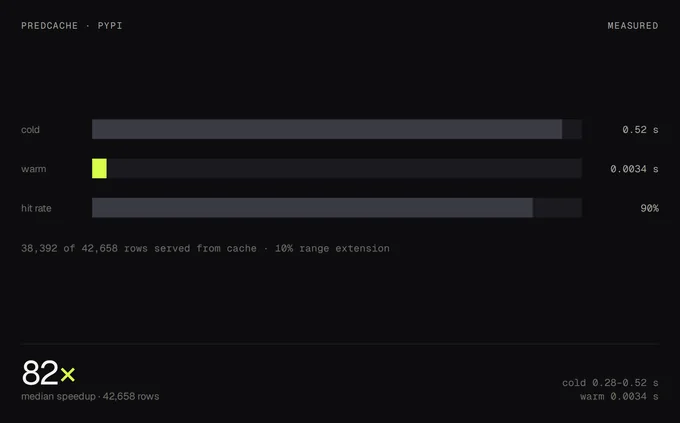
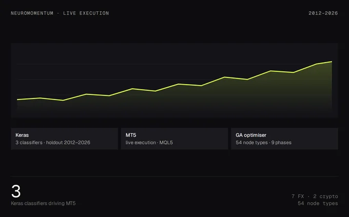
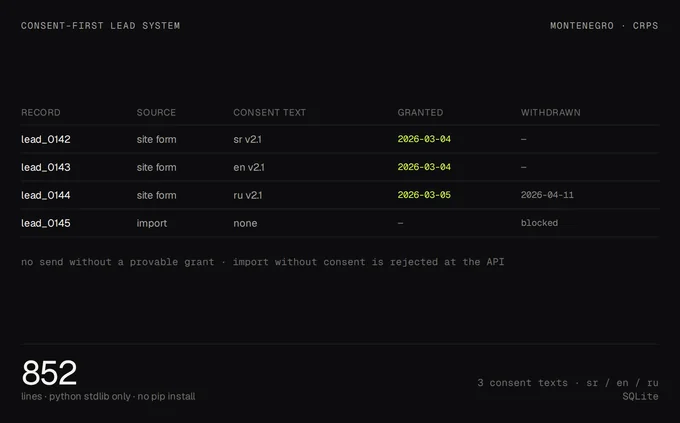
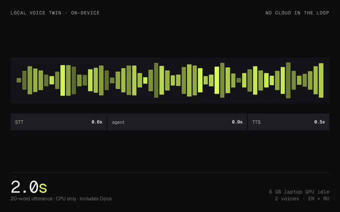
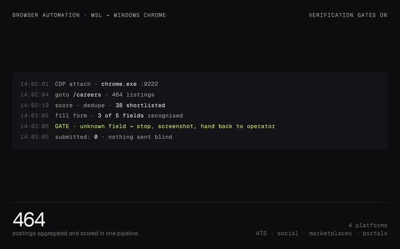
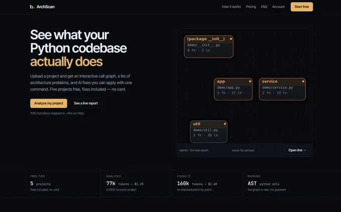

AI systems that run unattended.
AI automation engineer. I turn repeated work into agents that touch real systems — files, browsers, APIs, databases, GPUs — and I gate every one of them with tests, evaluations and an approval boundary, because an automation that silently does the wrong thing is worse than none. I measure whether they actually work: three runtimes run for me daily, and four libraries I generalised from them are public.
Measured, not claimed
Every number here ships with the benchmark that produces it. Where the honest answer was “no reproducible edge”, that is what the README says.
How I actually use AI
Not chat. An operating loop: an agent holds the context and the tools, a gate holds the authority, and everything it did is written down. Six rules I hold to across every system below.
Agents, not prompts
Anything that happens twice becomes an agent with its own profile, memory, toolset, schedule and approval policy. Chat is where a task is designed; the agent is where it lives afterwards.
Tools over talk
The model routes; the tools do the work. Shell, filesystem, browser over CDP, HTTP APIs, SQLite, GPU inference. If a task can’t reach a real system, it isn’t automated — it’s a draft.
Gates before authority
Irreversible actions — sends, submissions, payments, one-attempt tests — are dry-run first and
approved by a human. approvals.mode=manual on the production profile; one-shot
checks written down before the button is pressed.
Least privilege, enforced
A rule in a prompt is a suggestion. I scope the credential so the forbidden write is physically impossible — the withheld capability is absent from the tool registry, not disabled at runtime.
Measure or don’t claim
Every performance number I publish ships with the benchmark that produces it. Where the honest answer was “no reproducible edge”, that is what the README says.
Local first
On-device models when privacy, latency or cost matter: local STT/TTS, cloned voice, local inference. Cloud only where it buys something a laptop GPU can’t.
Systems I designed, built and run
Eight builds, roughly in order of how much of my working day they own — the last one shipped this week. Open any row for the engineering detail. Numbers are from the code, not from a slide.

live
Three-agent operating fleet
One person, three specialised AI runtimes: documents, business, trading — each with its own tools, memory and approval rules.
3 runtimesisolated profiles, shared operatordetail

What it is: a self-hosted agent platform on my own machine, split into three profiles that never share state: a document/office agent, a business-operations agent for a real-estate venture, and a trading-research agent. Each has a persistent memory, a skill library, scheduled jobs, and a channel into my phone.
What it took: per-profile state isolation, a Telegram gateway, scheduled jobs that survive restarts, a native MCP client for external tool servers, and hooks that enforce policy before the model ever sees a request — including a guard plugin that filters messages from a non-admin account and pins reply language per sender.
Why it matters: this is the difference between “using ChatGPT” and running automation. The agent answers at 3 a.m. from a queue, writes the file, and leaves an audit trail. I get the outcome, not a transcript.
Built with
- Python agent runtime, per-profile
HERMES_HOME - Telegram gateway + home-channel routing
- Cron scheduler, restart-safe state
- MCP stdio/HTTP tool servers
- Pre-LLM policy hooks, plugin guard
Operational detail
- Profiles: documents · business · trading
- Approvals: manual on production
- Memory: durable facts, sessions searchable

mit
agent-governance
A governed agent platform where the dangerous action is impossible, not discouraged — plus an evaluation harness whose grader is itself graded.
7/7 mutants53 tests · 12 cases / 19 assertionsdetail

What it is: an open-source platform for agents that must not autonomously write commitments into a shared work system — an owner, a due date, a status. Three agent tiers (read-only, contact, propose) over an 8-tool registry, with the withheld capability absent from the registry rather than disabled at runtime.
What it took: inversion-first design — start at the failure and work backwards. Four forbidden scopes are rejected at credential construction, so no prompt injection or model error can produce the forbidden write. On top sits an eval suite with a mutation score: the grader is graded, seven of seven mutants killed.
Measured
- Eval gate PASS — 12 cases, 19 assertions
- Mutation score 7/7 killed
- Forbidden-path audit: CLOSED
- Per-agent surface: 3→6 of 8 tools reachable
Link

shipped
predcache
Timestamp-keyed prediction cache and batched inference runner for ML models — extracted from a production trading system, published on PyPI.
82× mediancold 0.28–0.52 s → warm 0.0034 sdetail

What it is: full-range backtests over 100k+ bars were dominated by redundant model inference. Keying predictions by bar timestamp instead of row index makes any sub-range replayable without offset alignment, and makes incremental runs reuse everything already computed.
What it took: batched scoring, windowed feature assembly with production parameters, and a persistence layer that survives range extensions. Then the uncomfortable part: the original claim — “hours to minutes” — was unverifiable, so the repo ships a benchmark instead of a number. Run the command, get the figures on your machine.
Instrumentation: OpenTelemetry spans for cache lookup, inference batch and feature assembly, plus hit/compute counters — so a team can see whether the cache is actually working in their workload.
Benchmark, per run
- 42,658 scored rows · batch 500
- Cold p50 ~2.8 ms, p95 5.5 ms
- 67–133× observed spread, median of 5
Link

running
Neuromomentum — NN trading system + strategy platform
Three Keras classifiers driving MT5 live execution, a genetic-parameter optimiser, and a node-based strategy builder with training and backtesting in the browser.
2012–2026backtest range · 7 FX + 2 cryptodetail

What it is: a production neural-network trading system — three classifiers, live execution through MetaTrader 5, a Python-side optimiser with genetic search over six parameter groups, and a scale-free input design so one model serves every instrument.
The platform: a commercial node-based strategy designer: 54 node types, graph executor, backtest engine on H4/D1 series, async Keras training with Celery and WebSocket progress, five optimisation algorithms, walk-forward, JWT/SaaS layer, marketplace, broker connections. PostgreSQL 16, Redis 7, Docker + Nginx production stack, GitHub Actions CI, Prometheus metrics.
What I learned building it: how to keep a live system honest — re-optimise every parameter after every retrain, hold out model-blind test chunks, and price spread at reality instead of the flat default.
Stack
- Keras/TF · pandas · numpy
- MQL5 expert advisor, MT5 execution
- FastAPI · SQLAlchemy · Alembic
- Postgres 16 · Redis · Celery
- Next.js 14 · React Flow · Zustand
Shipped
- 9 phases, tagged and committed
- 29 passing tests, strict TS
- Prod compose + CI + monitoring

live
Consent-first lead system
A zero-dependency CRM and intake API built around a legal constraint: Montenegro only allows e-marketing with prior, provable consent.
852 linesstdlib only — no pip installdetail

What it is: lead intake for a real-estate business, designed evidence-first. A
lead cannot be written without consent: true — the endpoint returns 400 and stores
nothing. Each record carries the consent version, a SHA-256 hash of the exact wording shown, the
timestamp, IP and user agent. Withdrawal appends an event and stamps the lead out of every
marketing export, while keeping the record.
The AI part: three parallel research agents worked the primary sources — the data-protection statute and its 2026 replacement, the Electronic Communications Act — and the finding reshaped the product: consent can’t be bought, borrowed or scraped, and collected contact data can’t be transferred. So the schema became a consent ledger with an evidence chain an inspector would accept.
Engineering choices: SQLite + http.server, zero dependencies, so
it runs on any machine the business owns; CSV exports; a company table where only contracted
developers may have inventory published.
Surfaces
- POST /api/lead — public intake contract
- GET /api/config — consent texts
- Admin console + CSV exports
- consent_events ledger, opt-out stamping
Ops
- systemd user service, localhost-bound
- Bearer-token ingest, Meta lead webhook

local
Local real-time voice twin
Mic → local STT → agent → cloned-voice TTS → talking avatar, with no cloud in the loop and an 8 GB laptop GPU as the only accelerator.
2.0 s20-word utterance, CPU only, incl. Opusdetail

What it is: a research build that became an operating tool. Local speech recognition, a cloned voice in English and Russian, and a lip-synced avatar driven live — the whole loop running on my own hardware, with voice notes delivered straight into Telegram.
What it took: benchmarking the 2025–26 speech stack before writing anything (Parakeet, faster-whisper, Moonshine, sherpa-onnx for STT; Piper, Kokoro, Chatterbox, XTTS, CosyVoice for TTS), then picking per language: Chatterbox for English, XTTS-v2 for Russian after Chatterbox’s Russian accent failed an A/B. Avatar side: chunked TAESD decode, fixed frame pacing and idle-frame alignment to stop lip freezing.
Hardware reality: Blackwell mobile GPU, 8 GB VRAM — small enough that every choice is a real trade-off, which is exactly why the benchmark notes exist.
Pipeline
- faster-whisper base/large-v3 STT
- Chatterbox (EN) · XTTS-v2 (RU) clones
- Piper fallback: 10× real-time, CPU
- LiveTalking + MuseTalk avatar, WebRTC
- ffmpeg Opus → Telegram voice bubbles
Constraint
- RTX 5070 Laptop, 8 GB · CUDA 12.8 wheels
- Zero recurring API cost

live
Browser automation layer
Driving a real Windows Chrome from WSL over CDP: job applications, publishing, form filling — with verification gates for everything a bot can’t be trusted to do blind.
464 postingsaggregated and scored in one pipelinedetail

What it is: a control layer for a logged-in, human-owned browser. No headless fingerprints, no proxy games — WSL orchestrates, Windows Chrome does the clicking, and every submit is preceded by a screenshot check.
What it took: solving the loopback boundary (WSL is NAT-mode, CDP is only reachable from Windows), driving Chrome with a dedicated profile, and building verification gates: detect the challenge, stop, capture the state, escalate to a human instead of retrying into a ban.
Where it ran: 464 postings collected and scored; applications submitted through Greenhouse and a startup’s onboarding API; social publishing with a human-approved caption; long-form form filling where a wrong answer is unrecoverable.
Capabilities
- Session + profile management, port 9222
- Screenshot-gated submit confirmation
- Challenge detection → escalate, not retry
- Rate and behaviour pacing
Used for
- ATS applications and status verification
- LinkedIn / Instagram publishing
- Portal data collection

live · neuromomen.com
ArchScan — code intelligence with a fix gate
Point it at a Python project and get a resolved call graph, 18 located issue kinds, an LLM description per function — and a fixer whose patch only counts when the analyzer stops reporting the problem.
18 checksevery finding pinned to a real node iddetail

What it is: static architecture analysis for Python that ends in a verdict instead
of a report. Ingest takes a zip or a public repo and keeps only .py files —
path-traversal and zip-bomb guarded at 50 MB compressed / 30 MB extracted, credentials redacted
before anything is stored or sent to a model.
Analysis: a package → module → class → function graph with resolved call edges, then 18 checks over it — import cycles via Tarjan SCC, swallowed errors, god classes, duplicate AST skeletons, mutable defaults, deep nesting, coupling hubs, unreferenced code. Every finding carries its node id, so the UI focuses the exact function rather than a file and a line number.
The part that matters: the AI fixer doesn’t get to claim success. The patch is applied to the tree, the analyzer re-runs, and the patch is accepted only if the reported issue is gone — up to three passes, with the failed attempt fed back into the next prompt. After a batch the whole report is rebuilt from the repaired tree, so the graph never shows code you already fixed.
Measured
- 922 lines of assert-based self-checks, 8 files
- No test framework, no network in tests
- 1,889 lines — analyzer 606 · server 741 · billing 542
- Thresholds are module constants, deliberately editable
Also in the build
- FastAPI jobs, 1 h TTL, one live job per user
- Token metering with holds; Paddle checkout + HMAC webhook
- SQLite accounts, sessions, balance
- Cytoscape viewer: graph, panels, code, issue list
- Live: neuromomen.com — five projects free, metered after
- Repo: github.com/Geomanti/archscan — private, walkthrough on request
What I build with
Chosen per problem, not per fashion. The through-line is Python for orchestration, typed TypeScript at the edges, and infrastructure that can be tested without a cloud bill.
AI & agents
- Agent runtimes, tool calling
- MCP servers (stdio / HTTP)
- Evals, mutation testing
- Prompt + policy design
- Local LLM / STT / TTS
- OpenTelemetry, Prometheus
Languages
- Python (3.11+)
- TypeScript / JavaScript
- SQL
- MQL5
- C# (earlier work)
- Bash / PowerShell
Backend & data
- FastAPI, SQLAlchemy, Alembic
- PostgreSQL, SQLite, Redis
- Celery workers, WebSockets
- Pydantic, pytest, CI gates
- REST + webhook integrations
Delivery
- Docker, docker-compose, Nginx
- Terraform (AWS, GCP)
- GitHub Actions
- systemd, cron, self-hosting
- Linux (WSL2), Windows interop
Where the production discipline came from
Studio deadlines, fixed formats, and downstream consumers who notice everything.
Currently a 3D artist at Kaedim — studio clients including EA, Unilever, Lotus and TSE — on asset pipelines with hard deadlines, fixed formats and downstream consumers who notice everything. That work taught me the part AI can’t supply: what “correct” looks like when someone else has to use it.
Automation started as self-defence. Repetitive asset, document and research work became scripts, then agents, then a platform with approvals and logs. The trading system was the same instinct at a larger scale: if I’m going to run something unattended, it needs tests, a holdout set, and an honest verdict at the end.
I work in English and Russian, read Spanish at B1, and I’m based in Bar, Montenegro — one hour from most of Europe, on CET. Operating through my own company, Neuromomentum DOO, so remote contracting is straightforward.
Have work that repeats?
That is the conversation. Happy to walk through any system above at the code level — including the parts that failed and what they changed.